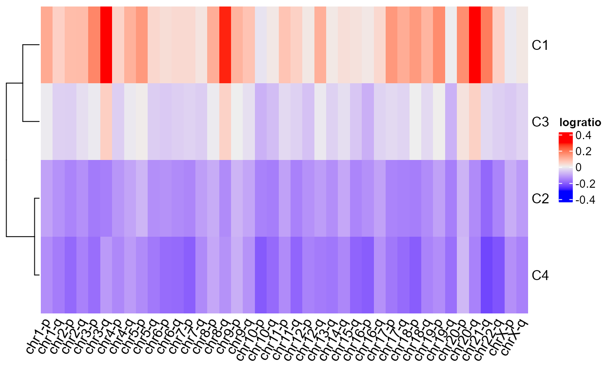
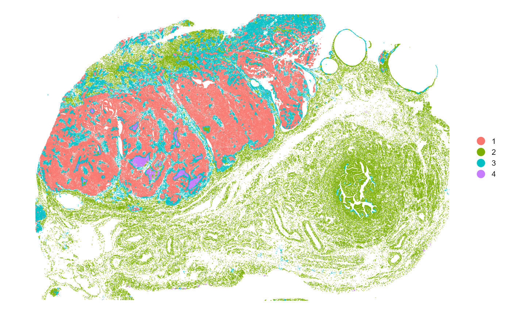
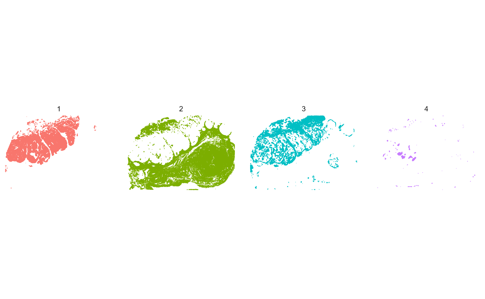

Quick start
Quick_start.RmdMinimum workflow
SpatialCopyInference infers somatic copy number aberrations (SCNAs) directly from Xenium spatial transcriptomics data. This vignette demonstrates the minimum SpatialCopyInference workflow to compute SCNA-defined spatial clusters using a human ovarian cancer dataset as an example. An extended workflow is also available in the SpatialCopyInference workflow.
To reproduce this example, first download the Xenium output files from: https://www.10xgenomics.com/datasets/xenium-prime-ffpe-human-ovarian-cancer
# Path to Xenium output directory
data_dir <- "path/to/Xenium_outputs/outs"
# Path to refined cell type annotations
annotation_file <- "path/to/cell_type_annotations.csv"
# Load SpatialCopyInference
library(SpatialCopyInference)
# Import data
xenium.obj <- import_xenium(data_dir, annotation_file)
# Quality control
xenium.obj <- filter_cells(xenium.obj)
xenium.obj <- filter_genes(xenium.obj, min_cells = 50, min_counts = 50)
# Normalisation
xenium.obj <- normalise_data(xenium.obj)
# Compute chromosome arm means
arm_means <- compute_arm_means(xenium.obj, min_genes_per_arm = 5)
# SCNA inference
arm_ratios <- compute_arm_ratios(arm_means,
xenium.obj,
group_var = "group",
reference = c("Fallopian Tube Epithelium", "Secretory Epithelial Cells"))
# Spatial clustering
BANKSY.obj <- compute_spatial_clusters(arm_ratios = arm_ratios,
xenium.obj = xenium.obj,
lambda = 0.8,
resolution = 0.1)
xenium.obj <- add_banksy_clusters(xenium.obj, BANKSY.obj)
# Visualisation
plot_cluster_heatmaps(BANKSY.obj, resolutions = 0.1)
#> $res_0.1
plot_spatial_clusters(xenium.obj)
#> $spatial_clusters_plot
#>
#> $spatial_clusters_plot_facets